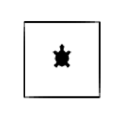
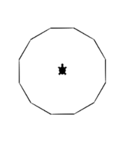

Python Basisaufgaben
Aufgabenbeschreibung
In dieser Aufgabe kannst du mit Python und dem GTurtle einfache Bilder zeichnen. Du lernst so die wichtigsten Mechanismen beim Programmieren kennen.
Vorgehen
- Kopiere die Python Vorlage mit der Ausgangslage auf deinen Computer über den folgenden Link. Vorlage.py
- Öffne den Link https://webtigerpython.ethz.ch/
- Kopiere den Inhalt der Python Vorlage und füge diesen im linken Bereich ein.
- Versuche nun in der Reihenfolge die Bilder gemäss den Aufgaben unten zu programmieren
Aufgaben
- Ein Quadrat

- Ein 12-Eck. Hinweis: Verwende eine Schleife

- Eine gleichmässige Spirale

- Eine wachsende Spirale. Hinweis: Verwende den Zähler i der Schlaufe.

- Eine Reihe von Rechtecken (Hinweis: Am einfachsten geht es mit einer eigenen Rechteck-Funktion)

- Farbige Reihe (Hinweis: die Farbe lässt sich mit setPenColor(Rotanteil, Grünanteil, Blauanteil) verändern)

- Farbiges Feld (Hinweis: Zwei Schlaufen ineinander)

- Farbige Linien (Hinweis: verwende setPos() und moveTo() für die Linien)

Hinweise zu GTurtle/Python
- Kommentar :
#*Hier kommt der Kommentar hin*
- Variable :
*xyz* oder *xyz* = *3*
- Schleife :
for i in range(*Wiederholungen*): *Code ist eingerückt*
- Logikabfrage :
if *x == y*: *Code ist eingerückt*
- Funktionen :
def *Funktionsname*(*Wert1*, *Wert2*): *Code ist eingerückt*
- Funktion aufrufen :
*Funktionsname*(*Wert1*, *Wert2*)
- (Angaben in * * sind Platzhalter für eigene Namen und Werte)
Python Vertiefungsaufgaben
Aufgabenbeschreibung
In diesen Aufgabe kannst du mit Python und dem GTurtle ein kompliziertere Bilder und Animationen erstellen.
Diese Aufgaben sind zusätzlich/optional und sollen dich mehr fordern.
Aufgaben
Alle Animationen sollen möglichst optimal erstellt werden, also so wenig Code wie möglich.
Die Animationen sollen auch nach 20 Sekunden nicht abstürzen.
- Auto
- Das Auto ist eine einfache Aufgabe als Einführung in die Animation gedacht.
- Das Auto soll mindestens aus einem Hauptblock und zwei Rädern bestehen.
- Das Auto soll sich von links nach lechts über den Bilschirm bewegen.
- Bonus: Das Auto soll sich an den Start zurücksetzen oder die Richtung wechseln sobald es den Rand des Bildschirms erreicht.
- Pong
- Ein Programm, in welchem ein Ball zwischen zwei Pfosten hin und her springt
- Die Platformen bewegen sich und der Ball wird immer gefangen.
- Windmüle
- Die Windmüle besteht aus einem Hauptblock und aus einem Windrad.
- Das Windrad soll sich drehen und der Block soll statisch bleiben.
- Mandala
- Das Mandala ist ein Test deiner Funktionskünste.
- Hier werden mehrere Formen in verschiedenen Farben nacheinander estellt um zum Schluss ein Bild zu erhalten.
- Die Formen und Farben sind frei wählbar.
- Sierpinski